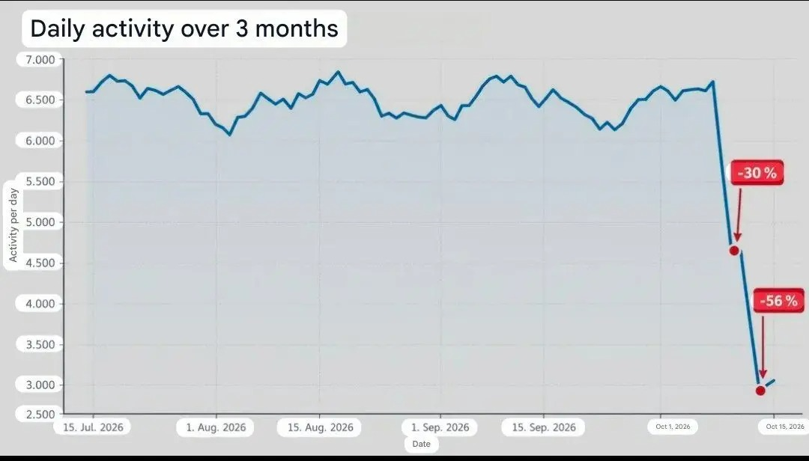

Rusku vypadli boti! Tedy YandexBot. Ale internet už mezitím stihl porazit trollí farmy
Rusku vypadl Yandex a internet během pár hodin stihl vyřešit ruskou hybridní válku. Na sociálních sítích se začaly objevovat nadšené postřehy, že proruské účty náhle ztichly, komentářové sekce jsou podezřele čistší a trollí farmy zřejmě dostaly přes ukrajinské drony centrální vypínač. Byl by to krásný příběh. Má jen jednu drobnou technickou vadu..

Graf, na kterém tahle kolektivní euforie stála, z velké části ukazoval YandexBot, tedy robota vyhledávače, který místo psaní o nacistické Evropské unii a sázení amerických vlaječek pod příspěvky Donalda Trumpa prostě obchází weby, stahuje stránky a nosí je Yandexu do indexu.
Internet tedy opět předvedl svůj nejoblíbenější trik. Vezmete graf, slovo bot, Rusko, čáru prudce dolů a necháte veřejnost, aby si chybějící souvislosti doplnila sama. Tentokrát dokonce bez pomoci bota.
Bot, bot a úplně jiný bot
Problém začíná už u samotného slova bot, kterým jsme se rozhodli pojmenovat téměř všechno, co na internetu něco dělá automaticky. Google má Googlebota, Microsoft Bingbot, Yandex YandexBot. Jsou to crawlery: přijdou na web, přečtou ho, následují odkazy a umožní vyhledávači později najít váš článek, e-shop nebo recept na bábovku.
Pak máme spamovací boty, bezpečnostní skenery, scrapery, automatizované účty na sociálních sítích a někde mezi tím skutečné nástroje vlivových operací.
Je to asi jako označovat slovem řidič taxikáře, Hamiltona, autobusáka, pašeráka kokainu a robotickou sekačku a následně z poklesu počtu řidičů usoudit, že vypadla městská doprava.
Ukrajinské útoky zasáhly infrastrukturu Yandexu a Cloudflare opravdu zaznamenal prudký propad automatizovaného provozu z některých jeho sítí. Jenže u Yandex Search šlo z drtivé většiny právě o legitimní roboty vyhledávače. Největší podíl měl YandexBot a další crawlery používané například pro renderování stránek a obrázky.
Přeloženo z odborného jazyka: ruský Google přestal pořádně indexovat web.
Což je po výpadku ruského Googlu skutečně překvapivý objev přibližně na úrovni zjištění, že po výpadku elektrárny zhasla žárovka.
Jenže titulek „Yandex po útoku hůř indexuje internet“ nemá správný válečný náboj. Zatímco „UKRAJINA VYPNULA RUSKÉ BOTY“ už skoro žádá soundtrack Hanse Zimmera.
Cloudflare opravdu nepočítal Ivany na Twitteru
Tohle je přitom celé technicky docela jednoduché. Cloudflare sledoval automatizované požadavky přicházející na weby ve své síti. Když YandexBot přijde stáhnout stránku, je to bot traffic. Když automatický program hledá zranitelný WordPress, je to bot traffic. Když crawler stahuje obrázky, je to bot traffic.
Z toho grafu ale opravdu nevyčtete, kolik falešných účtů právě píše na X, kolik zaměstnanců sedí v trollí farmě ani kolik profilů se jménem „John Smith 🇺🇸 MAGA“ má pracovní dobu podezřele dobře sladěnou s Moskvou.
Bot neznamená troll. Automatizované neznamená propagandistické. A ruská IP adresa ještě není zaměstnanecká kartička Kremlu.
Ano, u Yandex.Cloudu Cloudflare našel také méně nevinný automatizovaný provoz, například různé skenování serverů. Část z něj po výpadku skutečně zmizela. Jenže pak se ukázalo něco, co hackeři a provozovatelé pochybných skriptů zjevně pochopili dřív než Twitter: když vám přestane fungovat jeden server, můžete si pronajmout jiný server. Stejný typ provozu se začal objevovat od jiných hostingových poskytovatelů.
Kybernetická válka tedy tentokrát narazila na mimořádně sofistikovanou ruskou technologii zvanou změna hostingu.
A pokud někdo skutečně provozuje vlivovou operaci, která má předstírat stovky obyčejných Američanů, Němců nebo Francouzů, asi nebude úplně geniální posílat všechny jejich požadavky přímo z dobře známého ruského datacentra. To by nebyla sofistikovaná trollí farma. To by byla trollí farma s neonovým nápisem TROLLÍ FARMA nad vchodem.
A lidé si okamžitě všimli toho, čeho si předtím nevšímali
Nejkrásnější přišlo potom. Jakmile začala kolovat informace, že ruští boti vypadli, lidé začali hlásit, že to sami pozorují. Méně proruských komentářů! Čistší feed! Méně podivných účtů! Internet je náhle příjemnější!
Je fascinující, jak rychle dokáže člověk objevit pokles něčeho, co ještě den předtím vůbec nepočítal.
Nikdo si v pondělí nevedl tabulku „dnes jsem potkal 17 ruských trollů“. V úterý ale přišel graf, ve středu už všichni věděli, že jich je méně.
To není ani tak důkaz výpadku trollích farem jako krásná ukázka toho, jak funguje lidská hlava. Když vám někdo řekne, že něco zmizelo, začnete si všímat jeho nepřítomnosti. A nepřítomnost je mimořádně praktický důkaz, protože se velmi špatně screenshotuje.
Pak se dokonce začal šířit graf údajně dokazující propad aktivity kolem německé AfD. Vypadal velmi vědecky, měl čáry, čísla a všechno, co moderní člověk potřebuje k vypnutí kritického myšlení. Následné analýzy upozornily, že byl velmi pravděpodobně vytvořen pomocí AI a obsahoval dokonce časovou nesrovnalost.
A tím jsme podle mě dosáhli dokonalosti.
Proti údajným ruským dezinformačním botům jsme bojovali sdílením neověřeného obrázku pravděpodobně vyrobeného AI.
Satira si v tu chvíli může jít dát cigaretu. Realita už ji nepotřebuje.
Nevědět není problém. Nevědět s absolutní jistotou už trochu ano.
Nikdo samozřejmě nemusí vědět, jak funguje crawler, ASN, cloudová síť nebo klasifikace bot trafficu. Člověk může prožít velmi kvalitní život bez jediné myšlenky na HTTP požadavek.
Stačila ale jedna otázka: „Co přesně ten graf měří?“ Místo ní jsme dostali: Rusko + bot + čára dolů = Putin přišel o internetovou armádu.
A právě to je na celé historce mnohem zajímavější než samotný výpadek Yandexu. Dezinformace nevznikají pouze někde v petrohradské továrně na trolly. Velmi často vzniknou úplně obyčejně: někdo uvidí informaci, které nerozumí, její závěr se mu líbí, a proto už nemá zvláštní potřebu zjišťovat, jestli je pravdivý.
To funguje napravo, nalevo, u proruských účtů i u lidí, kteří se považují za profesionální bojovníky proti dezinformacím. Lidský mozek je v tomhle nádherně nestranný.
Yandex tedy skutečně dostal zásah. Jeho crawlery skutečně dramaticky omezily provoz. Část škodlivé automatizace také zmizela a část se přestěhovala jinam.
Co se ale nestalo, je magické vypnutí ruských trollích farem po celém světě.
Takže až příště uvidíte graf s nápisem: BOT TRAFFIC −99 %, ještě chvíli neotvírejte šampaňské. Nejdřív zjistěte, který bot.
Protože možná jste právě neporazili ruskou propagandu.
Možná jen Yandex přestal indexovat vaši bábovku.